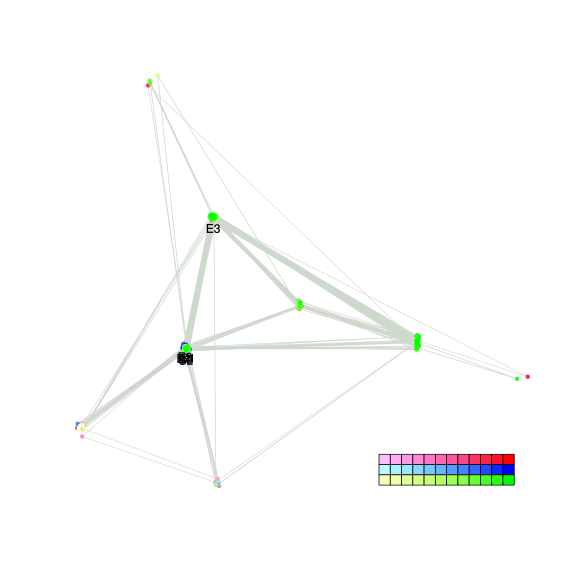
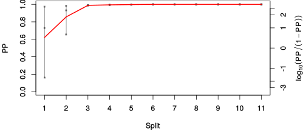
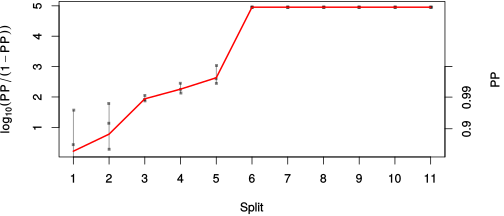

| chain # | burnin | subsample | Iterations (remaining) | command line | subdirectory | directory |
|---|---|---|---|---|---|---|
| 1 | 10000 | 1 | 90000 | bali-phy E1_AA_red3_v2_Alpha_Manatees_BetaGamma.fas -s 56243 -n Alpha_Manatees_BetaGamma_c1 | Alpha_Manatees_BetaGamma_c1-1 | /DATA/work/ONCOGENEVOL/database/trees/Bali-Phy/E1 |
| 2 | 10000 | 1 | 90000 | bali-phy E1_AA_red3_v2_Alpha_Manatees_BetaGamma.fas -s 36394 -n Alpha_Manatees_BetaGamma_c2 | Alpha_Manatees_BetaGamma_c2-1 | /DATA/work/ONCOGENEVOL/database/trees/Bali-Phy/E1 |
| 3 | 10000 | 1 | 90000 | bali-phy E1_AA_red3_v2_Alpha_Manatees_BetaGamma.fas -s 45394 -n Alpha_Manatees_BetaGamma_c3 | Alpha_Manatees_BetaGamma_c3-1 | /DATA/work/ONCOGENEVOL/database/trees/Bali-Phy/E1 |
| P(data|M) = -15399.746 +- 2.111 | Complete sample: 38 topologies | 95% Bayesian credible interval: 10 topologies |

Phylogeny Distribution

| Partition support: Summary |
| Partition support graph: SVG |
| 50% consensus | Newick (+PP) | SVG | |||||
| 66% consensus | Newick (+PP) | SVG | |||||
| 80% consensus | Newick (+PP) | SVG | |||||
| 90% consensus | Newick (+PP) | SVG | |||||
| 95% consensus | Newick (+PP) | SVG | |||||
| 99% consensus | Newick (+PP) | SVG | |||||
| 100% consensus | Newick (+PP) | SVG | |||||
| MAP | Newick (+PP) | SVG | |||||
| greedy | Newick (+PP) | SVG |
{kind=link}
{kind=link}
{kind=link}
{kind=link}
{kind=link}
{kind=link}
{kind=link}
{kind=link}
Alignment Distribution
Partition 1
| Diff | Min. %identity | # Sites | Constant | Informative | ||||
|---|---|---|---|---|---|---|---|---|
| Initial | FASTA | HTML | Diff | 4.39% | 660 | 1 (0.152%) | 639 (96.8%) | |
| Best (WPD) | FASTA | HTML | AU | 33.6% | 904 | 82 (9.07%) | 491 (54.3%) |


Mixing
| burnin (scalar) | ESS (scalar) | ESS (partition) | ASDSF | MSDSF | PSRF-CI80% | PSRF-RCF |
|---|---|---|---|---|---|---|
| 2883 | 26.62 | 8.067 | 0.086 | 0.417 | 1.114 | 1.242 |
Projection of RF distances for the first 3 chains3D | Variation of split PPs across chains |
Scalar variables
| Statistic | Median | 95% BCI | ACT | ESS | burnin | PSRF-CI80% | PSRF-RCF |
|---|---|---|---|---|---|---|---|
| prior | -1197 | (-1300, -1091) | 1e+04 | 26 | 1961 | 1.11 | 1.235 |
| prior_A1 | -1213 | (-1316, -1110) | 1.014e+04 | 26 | 991 | 1.114 | 1.242 |
| likelihood | -1.533e+04 | (-1.54e+04, -1.526e+04) | 9657 | 27 | 867 | 1.11 | 1.221 |
| logp | -1.652e+04 | (-1.659e+04, -1.647e+04) | 3155 | 85 | 1078 | 1.028 | 1.06 |
| Heat.beta | 1 | ||||||
| Scale1 | 5.021 | (2.961, 7.843) | 1.009 | 267693 | 62 | 1 | 0.9992 |
| S1.F.pi.A | 0.07082 | (0.0627, 0.07928) | 8.59 | 31433 | 206 | 1 | 1.003 |
| S1.F.pi.R | 0.04617 | (0.03941, 0.05296) | 12.55 | 21518 | 711 | 1.002 | 1.008 |
| S1.F.pi.N | 0.03649 | (0.03126, 0.04206) | 11.43 | 23616 | 367 | 1 | 1.008 |
| S1.F.pi.D | 0.05813 | (0.05043, 0.06629) | 413.4 | 653 | 189 | 1.008 | 1.008 |
| S1.F.pi.C | 0.05333 | (0.04445, 0.0626) | 8.546 | 31595 | 280 | 1.001 | 1.003 |
| S1.F.pi.Q | 0.04309 | (0.03713, 0.0492) | 24.8 | 10885 | 115 | 1 | 0.9991 |
| S1.F.pi.E | 0.0587 | (0.05162, 0.06597) | 27.9 | 9676 | 495 | 1.001 | 1 |
| S1.F.pi.G | 0.0782 | (0.0673, 0.08926) | 385.9 | 699 | 823 | 1.005 | 1.005 |
| S1.F.pi.H | 0.02443 | (0.01985, 0.0293) | 9.723 | 27768 | 94 | 1.001 | 1.008 |
| S1.F.pi.I | 0.04484 | (0.03811, 0.05165) | 8.546 | 31595 | 339 | 0.9998 | 1 |
| S1.F.pi.L | 0.09984 | (0.0888, 0.1112) | 14.6 | 18497 | 875 | 1.002 | 1.003 |
| S1.F.pi.K | 0.04177 | (0.03554, 0.04803) | 8.121 | 33248 | 407 | 0.9998 | 0.999 |
| S1.F.pi.M | 0.01932 | (0.01539, 0.02362) | 8.108 | 33300 | 595 | 1 | 1.006 |
| S1.F.pi.F | 0.0446 | (0.03733, 0.05229) | 8.3 | 32529 | 469 | 0.9999 | 1.001 |
| S1.F.pi.P | 0.04221 | (0.03469, 0.04991) | 13.11 | 20594 | 226 | 1.001 | 0.9995 |
| S1.F.pi.S | 0.06834 | (0.06054, 0.07647) | 39.36 | 6859 | 323 | 1 | 0.9978 |
| S1.F.pi.T | 0.06392 | (0.05647, 0.07156) | 9.16 | 29477 | 265 | 1.002 | 1.006 |
| S1.F.pi.W | 0.01241 | (0.008343, 0.01698) | 8.343 | 32363 | 734 | 0.9994 | 1.004 |
| S1.F.pi.Y | 0.02561 | (0.02033, 0.03144) | 7.924 | 34072 | 503 | 1.001 | 1.002 |
| S1.F.pi.V | 0.06611 | (0.05785, 0.07458) | 46.14 | 5852 | 249 | 1.001 | 0.9971 |
| I1.RS07.meanIndelLengthMinus1 | 2.49 | (1.839, 3.224) | 1633 | 165 | 829 | 1.008 | 1.026 |
| I1.RS07.logLambda | -3.862 | (-4.06, -3.658) | 2552 | 105 | 221 | 1.025 | 1.049 |
| |A1| | 851 | (811, 891) | 1748 | 154 | 2883 | 0.9745 | 0.9596 |
| #indels1 | 146 | (131, 160) | 9149 | 29 | 679 | 1.075 | 1.224 |
| |indels1| | 512 | (436, 593) | 4963 | 54 | 2128 | 1.01 | 0.9988 |
| #substs1 | 2791 | (2751, 2824) | 1317 | 205 | 1265 | 0.993 | 1.031 |
| Scale1*|T| | 5.735 | (5.488, 5.983) | 161.1 | 1675 | 139 | 1.005 | 1.008 |
| |A| | 851 | (811, 891) | 1748 | 154 | 2883 | 0.9745 | 0.9596 |
| #indels | 146 | (131, 160) | 9149 | 29 | 679 | 1.075 | 1.224 |
| |indels| | 512 | (436, 593) | 4963 | 54 | 2128 | 1.01 | 0.9988 |
| #substs | 2791 | (2751, 2824) | 1317 | 205 | 1265 | 0.993 | 1.031 |
| |T| | 1.142 | (0.6475, 1.726) | 1.003 | 269256 | 62 | 1 | 1 |